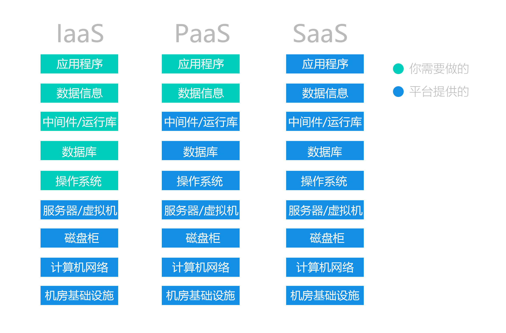
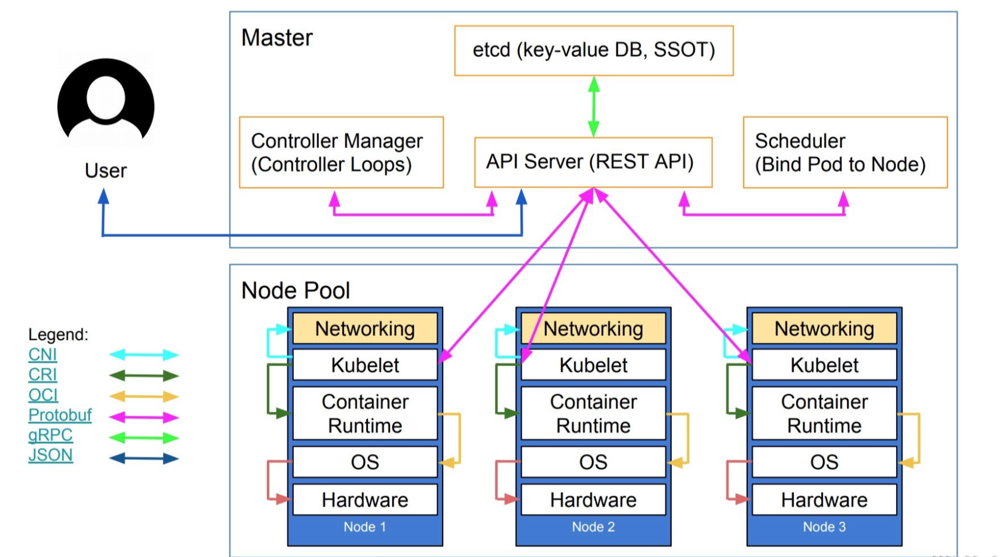
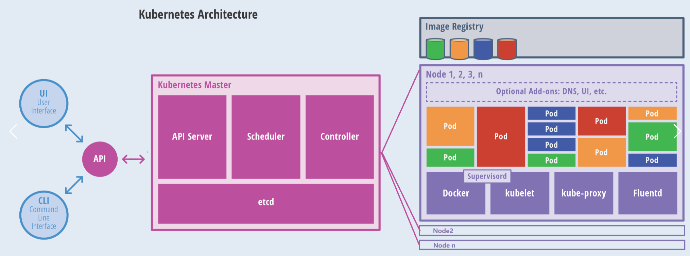

云计算基础设施介绍
本文介绍了云计算的三种主要类型：基础设施即服务 (IaaS)、平台即服务 (PaaS) 和软件即服务 (SaaS)，以及它们的典型使用场景和维护技术。同时，本文还简要介绍了Kubernetes（K8S）的高层架构和核心组件。
云技术三种类型
1. 基础设施即服务 (IaaS)
- 定义： IaaS是云计算最基础的服务模式，提供虚拟化的计算资源，如虚拟机、存储和网络。
- 你负责什么： 你需要管理操作系统、应用程序、数据和任何中间件。
- 典型使用场景：
- 开发测试环境： 快速部署和销毁虚拟机，为软件开发和测试提供灵活的环境。
- 网站托管： 在虚拟机上部署和运行Web服务器，托管网站或应用程序。
- 大数据处理： 搭建Hadoop或Spark集群，进行大规模数据分析。
- 灾难恢复： 构建异地灾备站点，提高业务连续性。
- 典型的使用和维护技术：
- 云平台软件： OpenStack（开源的云计算管理平台，常用于构建私有云），VMware vSphere（企业级虚拟化平台）。
- 虚拟机管理： 通常通过云服务提供商的控制台（如AWS管理控制台、Azure门户）或API进行管理。
- 自动化部署： 使用Terraform（基础设施即代码工具）或Ansible（自动化配置管理工具）来自动化虚拟机的创建、配置和管理。
- 操作系统管理： Linux（如Ubuntu, CentOS）或Windows Server。
- 网络配置： 配置VPC（虚拟私有云）、子网、安全组、负载均衡器等。
2. 平台即服务 (PaaS)
- 定义： PaaS在IaaS之上，提供用于开发、运行和管理应用程序的完整平台，抽象了底层基础设施。
- 你负责什么： 你主要负责部署和管理你的应用程序以及数据。
- 典型使用场景：
- Web应用开发和部署： 快速部署Python、Java、Node.js等语言的Web应用。
- API服务构建： 专注于编写业务逻辑，平台处理API网关和扩展性。
- 移动后端服务： 为移动应用提供数据存储、用户认证等后端功能。
- 典型的使用和维护技术：
- 容器编排：
- Docker Swarm： Docker官方的容器编排工具，简单易用，适用于中小型部署。
- Kubernetes (K8s)： 业界领先的容器编排系统，功能强大，扩展性好，适用于大规模、复杂的容器化应用部署和管理。许多PaaS平台内部都基于Kubernetes。
- 语言运行时和框架： 如Java虚拟机(JVM)、Node.js运行时、Python解释器、.NET Core等。
- 数据库服务： PaaS平台通常提供托管的数据库服务，如MySQL、PostgreSQL、MongoDB等。
- CI/CD (持续集成/持续部署)： 许多PaaS平台内置或支持与GitLab CI/CD、Jenkins等工具集成，实现代码提交后的自动化构建、测试和部署。
- 应用性能监控 (APM)： 使用New Relic、Datadog等工具监控应用程序的性能和健康状况
- 容器编排：
3. 软件即服务 (SaaS)
- 定义： SaaS是云计算最高级的服务模式，直接提供可通过互联网访问的完整应用程序。
- 你负责什么： 你只需要使用应用程序并管理你的数据。
- 典型使用场景：
- 日常办公协作： 使用在线文档、电子表格、演示文稿和邮件服务。
- 客户关系管理 (CRM)： 管理销售线索、客户信息和客户服务。
- 企业资源规划 (ERP)： 整合企业各项业务流程，如财务、采购、生产、库存等。
- 项目管理： 在线协作工具，跟踪项目进度和任务分配。
- 典型的使用和维护技术：
- 用户管理和权限控制： 通过SaaS服务提供商的用户界面进行用户账户创建、角色分配和权限设置。
- 数据导入导出： 根据SaaS应用提供的功能进行数据的批量导入或导出。
- API集成： 许多SaaS应用提供API接口，允许与其他系统进行数据集成或功能扩展。例如，将CRM系统与营销自动化工具集成。
- 定制化配置： 根据业务需求在SaaS应用的用户界面进行功能设置、工作流配置或报表定制。
- 用户培训和支持： 通常涉及用户手册、在线教程、技术支持票证系统等。
| 服务模式 | 你（用户）负责 | 云服务提供商（供应商）负责 |
|---|---|---|
| IaaS | 应用程序，数据，运行时，中间件，操作系统 | 虚拟化，服务器，存储，网络 |
| PaaS | 应用程序，数据 | 运行时，中间件，操作系统，虚拟化，服务器，存储，网络 |
| SaaS | 数据 (仅限你的数据) | 应用程序，运行时，中间件，操作系统，虚拟化，服务器，存储，网络 |

K8S高层架构

- Master (控制平面)
User: 代表操作集群的用户或外部系统。API Server (REST API): 明确指出其提供的是REST API。它是与用户、Kubelet和其他 Master 组件交互的中心。etcd (key-value DB, SSOT): 明确其作为键值数据库和单一事实来源 (Single Source of Truth) 的角色。API Server是唯一直接与其交互的组件，确保了数据的一致性。Controller Manager (Controller Loops): 它是一个守护进程，运行着所有核心的控制器（如前文所述），每个控制器都是一个独立的“控制循环”。Scheduler (Bind Pod to Node): 明确了其核心功能是“将Pod绑定到节点”。
- Node Pool (节点池)
Node: 包含了一系列底层资源和上层组件。Hardware: 物理或虚拟的计算资源（CPU, 内存, 存储）。OS: 操作系统（如 Linux）。Container Runtime: 容器运行时，负责管理容器生命周期。Kubelet: 节点代理，负责与API Server通信，并调用Container Runtime和Networking插件来管理Pod。Networking: 节点的网络堆栈，负责配置Pod的网络。
图例 (Legend) 解读 - 关键部分
JSON(蓝色箭头):JSON是一种轻量级数据交换格式。图示User和API Server之间使用JSON格式通过REST API进行通信。gRPC / Protobuf(绿色/紫红色箭头):gRPC是一个高性能的远程过程调用（RPC）框架，使用Protobuf作为其接口定义语言和数据序列化格式。图示Kubelet与API Server，以及API Server与etcd之间使用这种高效的方式通信。CRI (Container Runtime Interface)(青色箭头): 容器运行时接口。这是一个标准化的插件接口，允许Kubelet与任何兼容 CRI 的容器运行时（如containerd,CRI-O）进行通信。这使得 K8S 不再强依赖于 Docker。CNI (Container Network Interface)(天蓝色箭头): 容器网络接口。这是一个标准化的插件接口，允许Kubelet调用不同的网络插件来为Pod配置网络。这使得 K8S 可以灵活地集成各种网络方案（如 Calico, Flannel）。OCI (Open Container Initiative)(土黄色箭头): 开放容器倡议。它定义了关于容器镜像格式和运行时的行业标准。Container Runtime遵循 OCI 标准来运行容器。

核心组件作用
- 用户交互层 (User Interface / Command Line
Interface)
UI (User Interface): 图形化的Web界面（如 Kubernetes Dashboard），方便用户监控和管理集群资源。CLI (Command Line Interface): 命令行工具，最常用的是kubectl。开发者和管理员通过它发送指令来创建、删除、查询和修改K8S对象。API: 这是整个 K8S 系统的入口。UI、CLI 和集群内部组件之间的所有通信都必须通过这个统一的 API 入口，它由API Server提供服务。
- Kubernetes Master (控制平面)
API Server: K8S 的核心，所有组件的通信枢纽。它暴露了 K8S API，负责处理所有请求，并验证、授权、执行这些请求。Scheduler (调度器): 负责监视新创建的、尚未分配到节点的Pod，并根据资源需求、亲和性、策略等因素，智能地选择一个最合适的Node来运行这个Pod。Controller (控制器): 负责维护集群的期望状态。它包含多种控制器（如副本控制器、节点控制器等），持续地将集群的当前状态与期望状态进行比较，并做出相应调整。例如，当一个Pod意外宕机时，副本控制器会立即创建一个新的Pod来替代它。etcd: 一个高可用的分布式键值存储系统。它是 K8S 的“真理之源”（Single Source of Truth），存储了整个集群的所有配置数据和状态信息，如Pod、Service、Secret等对象的定义和状态。
- Node (工作节点)
Pod: K8S 中最小、最基本的部署单元。一个Pod可以包含一个或多个紧密关联的容器，它们共享网络和存储资源。Docker: 在此图中特指容器运行时 (Container Runtime)。它负责真正的容器管理，包括从镜像仓库拉取镜像、启动和停止容器等。kubelet: 每个Node上的代理程序。它直接与 Master 的API Server通信，接收在当前节点上要运行的Pod的描述信息，并确保这些Pod中的容器处于运行且健康的状态。kube-proxy: 每个Node上的网络代理。它负责维护节点上的网络规则，实现 K8SService的概念，允许网络在Pod之间进行通信，并处理集群内外的负载均衡。Fluentd: 这是一个可选的日志收集守护进程。它通常作为插件部署，用于收集节点和容器的日志，并将它们发送到统一的日志处理中心。Image Registry (镜像仓库): 用于存储容器镜像的地方，例如 Docker Hub 或私有的 Harbor。kubelet会从这里拉取运行Pod所需的镜像。
Comments
Comment plugin failed to load
Loading comment plugin